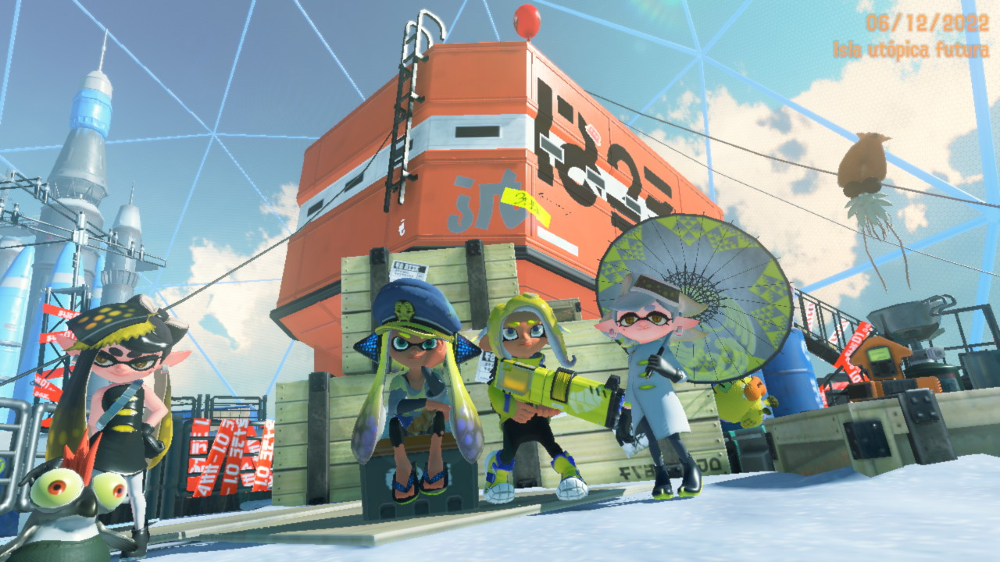
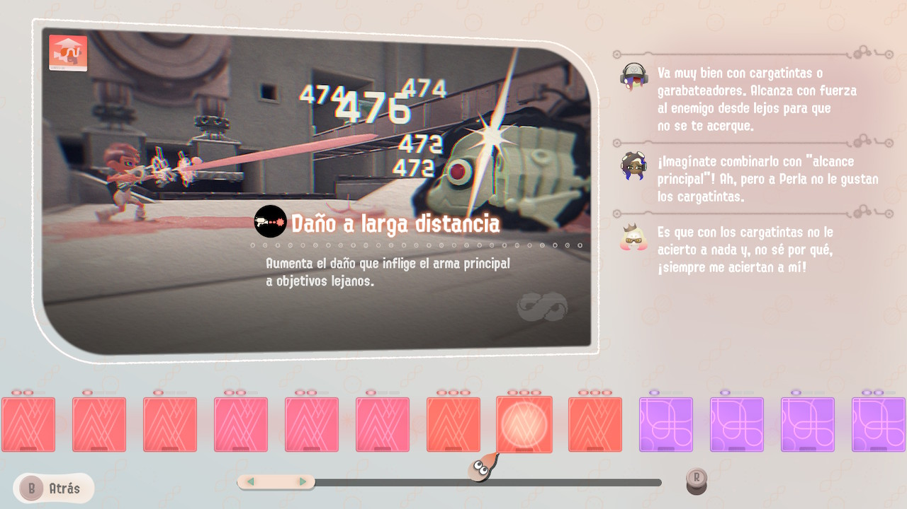

MODO HISTORIA
Cada juego de Splatoon tiene un Modo Historia donde el jugador se enfrenta a los Octarianos y otras amenazas para salvar la ciudad y descubrir secretos del mundo.
Splatoon (2015) – El Gran Zapfish ha sido robado
Juegas como Agente 3, reclutado por el Capitán Jibión para rescatar al Gran Zapfish, la fuente de energía de Cromópolis, robado por los Octarianos.
Enfrentas varios niveles de plataformas y combates contra Octarianos.
Jefe final: DJ Octavio, líder de los Octarianos, quien lucha con un gigantesco meca.
Splatoon 2 (2017) – El Regreso de los Octarianos
La historia continúa con un nuevo Agente 4, quien debe rescatar a Tina (Marie), secuestrada por los Octarianos bajo el control de DJ Octavio.
Con la ayuda de Tina, se enfrenta a los nuevos enemigos y jefes mejorados.
Jefe final: Nuevamente DJ Octavio, pero esta vez con un enfrentamiento más intenso junto a Mar (Callie), quien recupera su voluntad gracias a la canción Calamari Inkantation.
Expansión Octo (Octo Expansion – 2018)
Juegas como un Octoling (Agente 8) que despierta en un misterioso Metro Abisal sin recuerdos.
Para escapar, debes superar duras pruebas impuestas por Tártaro, una IA que busca la "perfección".
Jefe final: Una épica batalla contra un enorme cañón letal activado por Tártar.
Impacto: Expande la historia de los Octarianos y permite jugar como Octoling en el multijugador.
Splatoon 3 (2022) – El Regreso de los Mamiferoides
Como Agente 3, investigas el misterioso Alterna, una ciudad abandonada cubierta por un lodo que convierte a los seres en mamiferoides.
Descubres que el Capitán Jibión fue secuestrado por los misteriosos Ejecutivos de Don Oso S.A.
Jefe final: Don Oso, el líder de la corporación, intenta terraformar el mundo con su ejército de mamiferoides.

La Cara del Orden (Side Order – 2024)
Una historia alternativa donde juegas como Agente 8 en un Inkopolis en blanco y negro dominado por la Torre del Orden.
Debes escalar la torre y descubrir los secretos detrás de este nuevo mundo.

Para más información: